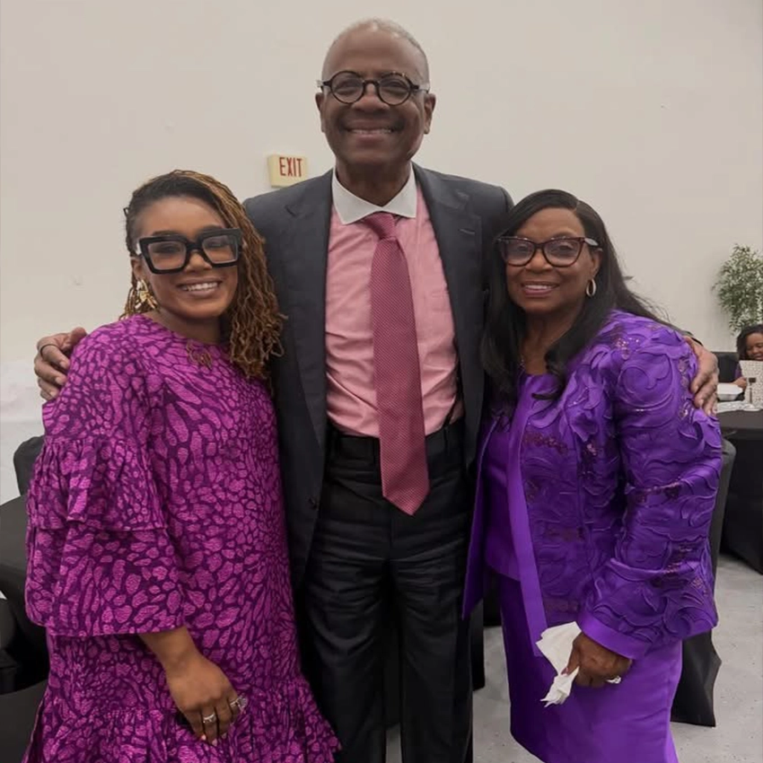
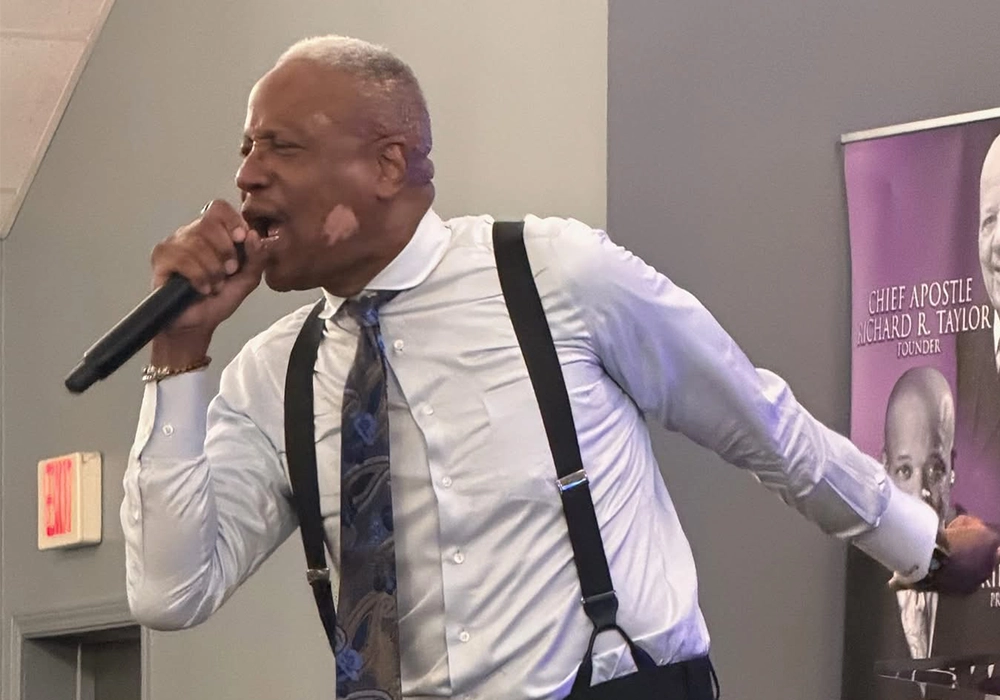

Designed to stand out
Important district gatherings now have a dedicated visual feature instead of living only in the event cards.
WHAT'S HAPPENING
Worship. Fellowship. Equipping. Stay connected with the life of District Three.
Official event dates and locations will be posted here once confirmed by district leadership.
Ask about upcoming gatheringsDISTRICT THREE · TEXAS STATE COUNCIL
Saturday, November 7, 2026
Location details may be added once finalized by district leadership.
FEATURED GATHERING
Version 2 gives your event more visual presence with a featured flyer section that can be updated for future gatherings, councils, and district-wide announcements.
Important district gatherings now have a dedicated visual feature instead of living only in the event cards.
Swap out this content later for conventions, revivals, leadership intensives, or district fellowships.
DISTRICT MOMENTS
A more visual concept for highlighting worship, leadership, and the spirit of fellowship across the district.


WELCOME TO DISTRICT THREE
Pastoring takes vision. It also takes connection.
District Three is part of the Texas State Council of the Pentecostal Churches of the Apostolic Faith International, Inc. We are committed to strengthening churches, cultivating relationships among pastors, and advancing the Gospel of Jesus Christ.
Whether you lead an established congregation or are planting a new work, there is room for a conversation about fellowship, accountability, and shared purpose.
OUR SHARED MISSION
Rooted in biblical truth. Empowered by the Holy Ghost. United in service, holiness, and spiritual excellence.
WHAT WE STAND FOR
The commitments that guide our fellowship and support our congregations.
Holding fast to Scripture, biblical doctrine, and the teachings of the Apostolic faith.
Building lasting pastoral relationships through prayer, encouragement, and mutual support.
Encouraging sincere worship and Spirit-led ministry within our local churches.
Equipping leaders and strengthening churches for effective Kingdom service.
SERVING WITH PURPOSE
Faithful leadership. Shared vision. A continued commitment to the church.
DISTRICT DIRECTOR
Serving as Director of District Three, fostering fellowship, church development, and Kingdom connection.
DIOCESAN & PRESIDING BISHOP
Providing episcopal leadership and spiritual direction for the Texas State Council and the national fellowship.
WORSHIP ACROSS TEXAS
A growing directory of local churches and their pastoral leadership.
CONNECTION POINTS
A stronger pathway for pastors, church plants, and established works to see where they fit in the district conversation.
For leaders who desire relationship, covering, and meaningful Apostolic connection.
For ministries building from the ground up and looking for encouragement, fellowship, and shared wisdom.
For churches that want to stay rooted, collaborative, and connected in Kingdom purpose.
AN INVITATION TO PASTORS
If you are looking for Apostolic-Pentecostal fellowship, trusted relationships, and a shared commitment to Kingdom work, we invite you to introduce yourself to District Three.